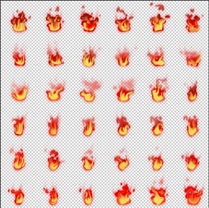
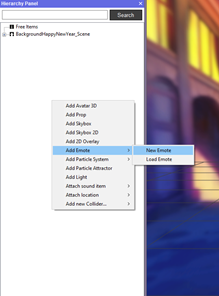
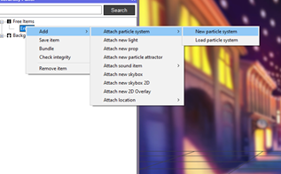
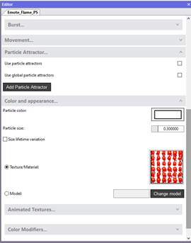
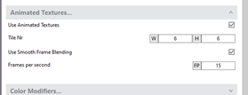
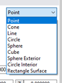
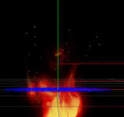
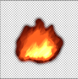
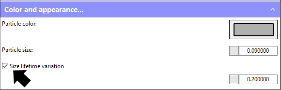

アニメーション化されたエモートの追加方法
エモートは、どんなアバターにも適用できる世界的な特殊アクションで、その目的はアバターをより表情豊かにすることです（例：怒った表情をより向上させるには、炎のエモートをおすすめします）。エモートはキーバインドからトリガーされます。

エモートは下記のような他のAnimazeのアイテムを入れることのできるコンテナのようなアイテムです：パーティクル・システム（現時点での私達のメインアイテム）、ライト（アバターには4つまでしか適用できません）、3D小道具、音。
トリガーすると、エモートは一時的にアバターに適用されます。アバターの動きに追従するか否かや、特定の骨格の関節を選択するオプションも付いています。
エモートはカスタム可能で、下記のオプションを使用して設定できます：
1. エディターの階層パネルを通した、パーティクル・システム、ライト、3D小道具または音アイテム（もしくはその両方）の適用
2. 適用されたエモートのコンポネント/アイテムの時間
3. エモートの継続時間
4. エモートを特定の骨格の関節に適用
5. アバターの動作に追従するか否か
パーティクル・システムを含む炎のエモートを作成してみましょう：
1.テクスチャーアトラス（.png形式）を作成 ― 同じアイテムのマルチ小画像を含む画像。テクスチャーアトラスを作成する最も簡単な方法は、Photoshopのタイムラインを使用して、フレームドローイングでフレームを作成することです。6x6のタイルの画像を使用します：

2.Animazeエディターを開き、階層パネルの何も無いスペースで右クリックして、エモートを追加を選択し、それから新しいエモートを選択します。名前を付ける際は「Emote_Name」を使用することを提案します。

3. 新たに作成したエモートを右クリックし、追加 > パーティクル・システムを適用 > 新しいパーティクル・システム の順に選択します。名前を付ける際は「“Emote_PS」を使用することを提案します。パーティクル・システムを追加する場合、名前に数字を付け加えて、使いやすいようにしましょう。

4. エディターパネルの右で色と外見タブを開き、テクスチャーマテリアルボックス内でアトラステクスチャーをドラッグ＆ドロップします。ここでは、パーティクルのサイズも変更します（1 = 1m)。

5. 必要であれば、アニメーション化されたテクスチャータブを開き、アニメーション化されたテクスチャーを使用するにチェックを入れ、タイルの幅と高さの数字を設定して、円滑なフレーム・ブレンディングを使用にチェックを入れてFPSを調整します。

6. 世代と寿命タブ内：
a. エミッターの種類を設定。炎の例では「Point」を使用します。

b. 1秒ごとに生成されるパーティクルを1に設定
c. パーティクルの寿命を設定。3に設定しました
フレームのディスプレイがよりリアルになるよう、追加のパーティクルを加えました。下の画像の炎の光をご覧ください：

このようにしたい場合、上記と同じ手順を踏みますが、タイルの画像の代わりにシングルレイヤーの画像（タイルではないもの）を使用します： 
サイズの寿命のバリエーションにチェックを入れてサイズ値を設定します：

これのエミッターの種類はサークルに設定されています。スケールと位置を好みに調整します。パーティクルの最大値は20で、パーティクルは1秒ごとに10生成され、自分の使用方法に合わせて好きな値に調整します。
頑張って！素晴らしい機能です！